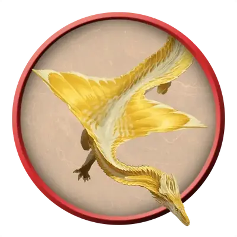

Молодой золотой дракон
Young Gold Dragon
Большой Дракон (Металлический), Принципиальный Добрый

Класс Защиты 18 Инициатива +6 (16)
Хиты 178 (17к10 + 85)
Скорость 40 футов, Плавания 40 футов, Полёта 80 футов
| мод | спас | ||
|---|---|---|---|
| СИЛ | 23 | +6 | +6 |
| ЛОВ | 14 | +2 | +6 |
| ТЕЛ | 21 | +5 | +5 |
| мод | спас | ||
|---|---|---|---|
| ИНТ | 16 | +3 | +3 |
| МДР | 13 | +1 | +5 |
| ХАР | 20 | +5 | +5 |
Иммунитеты Огонь
Чувства Тёмное зрение 120 футов, пассивное Восприятие 19, Слепое зрение 30 футов
Языки Общий, Драконий
Опасность 10 (5 900 опыта; БВ +4)
Особенности
Амфибия. Молодой золотой дракон может дышать как воздухом, так и под водой.
Действия
Мультиатака. Дракон совершает три атаки Раздиранием. Он может заменить одну атаку использованием Ослабляющего дыхания.
Раздирание. Бросок рукопашной атаки: +10, досягаемость 10 фт. Попадание: 17 (2к10 + 6) Рубящего урона.
Огненное дыхание (Перезарядка 5–6). Спасбросок Ловкости: Сл 17, каждое существо в 30-футовом Конусе. Провал: 55 (10к10) урона Огнём. Успех: Только половина урона.
Ослабляющее дыхание. Спасбросок Силы: Сл 17, каждое ещё не подверженное этому эффекту существо в 30-футовом Конусе. Провал: Цель получает Помеху на Тесты к20, связанные с Силой, и вычитает 3 (1к6) из своих бросков урона. Она повторяет спасбросок в конце каждого своего хода, оканчивая этот эффект при успехе. Спустя 1 минуту она автоматически преуспевает в спасброске.
Бонус мастерства +4
Среда обитания Леса, Луга
Сокровища Магические
Золотые драконы
Драконы надежды и величия
Золотые драконы делают всё возможное, чтобы мир стал лучше. Самые величественные и могущественные из металлических драконов, они стремятся защитить всё доброе и привести мир к светлому будущему. Несмотря на своё добродушие, они всегда готовы вступить в сражение и воспользоваться ослепительным пламенем или ослабляющей магией для победы над врагами.
Золотые драконы любят степи и девственные леса, часто селятся рядом с великолепными памятниками природы или берут под защиту монументы древних цивилизаций. В своих логовах они не только собирают монеты и самоцветы, но и тратят эти богатства для достижения величайших целей, например на покупку редких исторических книг, оплату услуг осведомителей или помощь искателям приключений с возвышенными идеалами.
Молодые золотые драконы узнали, что такое настоящее вселенское зло, и теперь готовы отправиться в свой священный поход против него.
Как правило, они предпочитают решительный и прямолинейный подход к решению проблем.